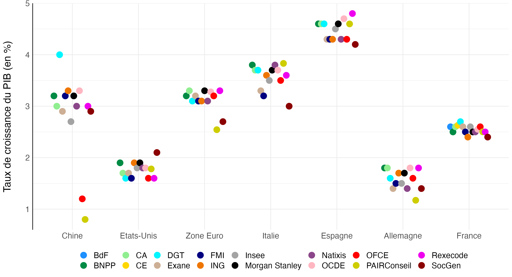
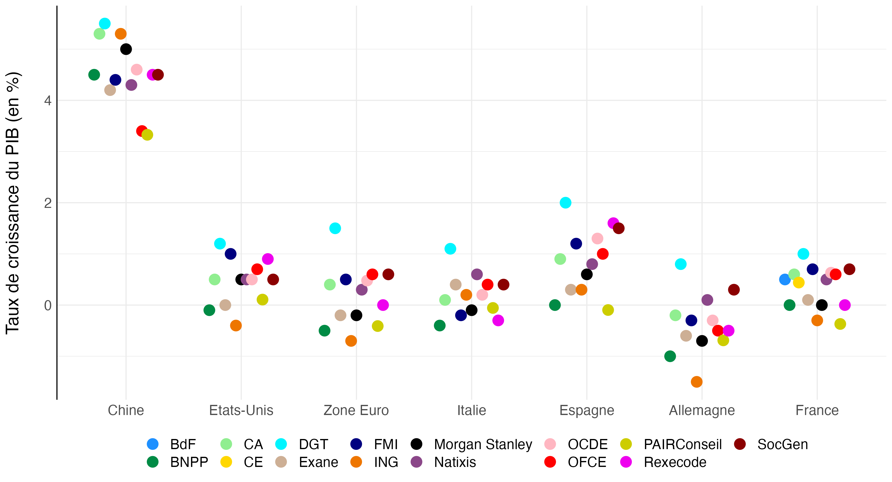
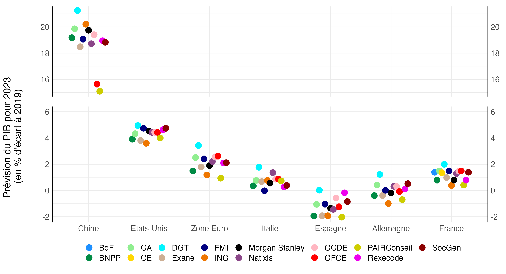
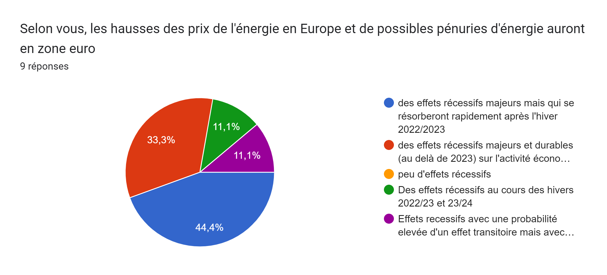
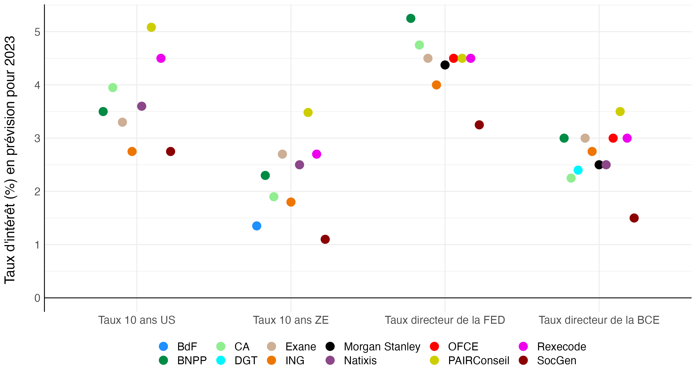
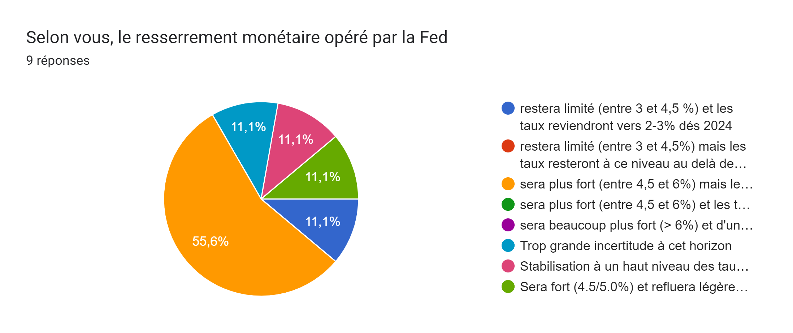
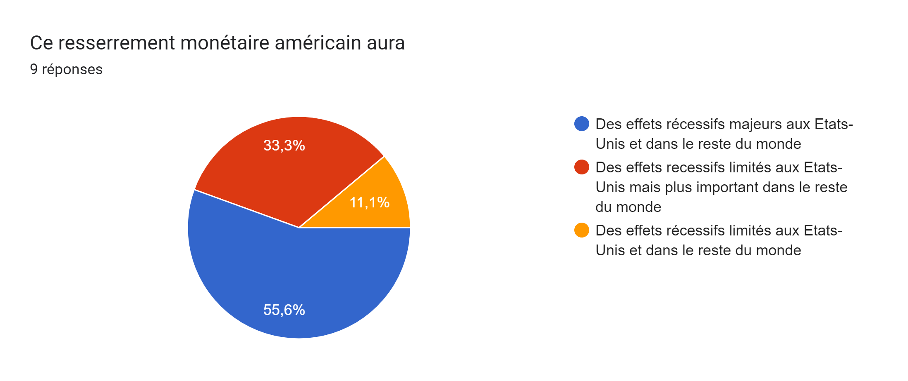
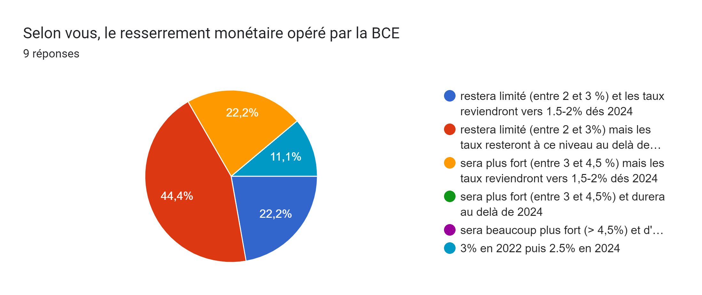
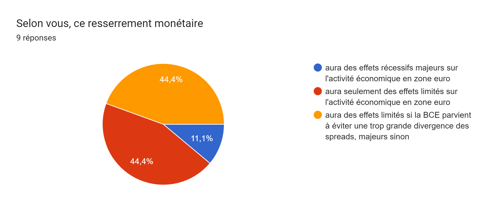

Trouver un titre svp OFCN 2022
Comme chaque année depuis 2018, l’OFCE a organisé fin novembre 2022 l’Observatoire Français des Comptes Nationaux. Cet évènement est l’occasion pour les différents organismes réalisant des prévisions sur l’économie française et son environnement international (INSEE, Direction Générale du Trésor, Banque de France, Rexecode, OFCE pour les instituts spécialisés auxquels s’ajoutent des acteurs privés) d’échanger sur leurs prévisions respectives, leurs scénarios conjoncturels et leurs méthodes. En plus des organismes réalisant des prévisions, des institutions importantes y assistent comme observateurs: partenaires sociaux, UNEDIC, IRES, Haut Conseil des Finances Publiques. En amont de cette rencontre, les organisateurs collectent les prévisions pour l’année en cours et l’année suivante des différents instituts et envoient un questionnaire plus qualitatif aux participants pour recueillir leurs opinions sur le scénario économique des prochaines années. Les prévisions ont été réalisées en octobre ou en novembre à l’exception de celle du Trésor effectuée en aout. Certaines n’intégrent donc pas l’information fournie par les versions provisoires des comptes nationaux du troisième trimestre 2022, disponible par exemple fin octobre en France.
Introduction
L’édition 2021 de l’OFCN s’était caractérisée par une certaine confiance dans une solide reprise post-COVID. En moyenne, les instituts prévoyaient ainsi des taux de croissance de 4 % en 2022 pour la France, l’Italie, l’Allemagne et les Etats-Unis, 5 % pour le Royaume-Uni et jusqu’à 6 % pour l’Espagne. Ces prévisions peuvent apparaitre exagérément optimistes aujourd’hui mais il convient de rappeler qu’il s’agit du taux de croissance par rapport à une année 2021 encore très marquée par les restrictions liées au COVID. Si ce scénario s’était réalisé, le PIB 2022 n’aurait été supérieur à celui de 2019 que de 2 % en France, et en Allemagne, 1 % au Royaume-Uni et en Italie et de 6 % aux Etats-Unis. Le PIB espagnol aurait lui toujours été inférieur à son niveau de 2019. Le scénario de croissance envisagé par les panélistes de l’OFCN en 2021 était donc vraisemblable. En ce qui concerne les tensions inflationnistes qui étaient déjà significatives aux Etats-Unis et qui avaient commencé à apparaitre en Europe, les panelistes les voyaient se réduire au cours de l’année. Ainsi, aucun institut ne prévoyait de taux d’inflation supérieur à 3 % en France et en Zone Euro en 2022.
Calendrier des réalisations des prévisions présentées à l’OFCN 2022
| Fin de l’été 2022 | Octobre 2022 | Novembre 2022 |
|---|---|---|
| Banque de France (15/09), DG Trésor (PLF), Société Générale | Insee, FMI, OFCE | Crédit Agricole, Exane, ING, Natixis, OCDE, Rexecode |
Ce scénario a été rapidement invalidé. L’invasion de l’Ukraine par la Russie en février 2022 et le jeu de sanctions et contre-sanctions ont fait bondir les prix de l’énergieet, en particulier en Europe avec un double impact négatif. D’une part, la dégradation des termes de l’échange réduit le pouvoir d’achat des ménages et donc leur consommation. D’autre part, le renforcement des tensions inflationnistes, y compris pour la partie dite « cœur » de l’inflation, induit une politique monétaire plus restrictive des banques centrales européenne avec là aussi un impact négatif sur l’activité. L’investissement des entreprises et des ménages en Europe a été freiné par l’incertitude géopolitique accrue1, tandis que les exportations européennes vers le marché russe, représentant certes une part limitée des exportations et de la production des pays européens, se sont effondrées. Cependant, les difficultés économiques de l’année 2022 ne sont pas toutes imputables à la guerre en Ukraine. En Chine, les mesures “zéro COVID” ont persisté beaucoup plus longtemps que prévu avec là aussi un double effet. D’abord, cela a impacté négativement la croissance chinoise réduisant les débouchés des exportateurs européens. D’autre part, les tensions sur les chaines d’approvisionnement ont renforcé l’inflation en Europe et aux Etats-Unis. Aux Etats-Unis, la croissance s’est révélée plus faible qu’anticipée et l’inflation post-COVID plus forte. Des taux d’inflation inédits depuis les années 80 ont conduit à un resserrement monétaire accéléré de la part de la réserve fédérale dont les conséquences directes et indirectes sur l’économie américaine mais aussi sur le reste de l’économie mondiale sont au centre des questions pour 2023.
Face à ce tableau inquiétant, la prudence a dominé l’édition 2023 de l’OFCN avec des prévisions de croissance très faibles n’excluant pas la possibilité de récessions pour certains pays. Pour la France, le consensus reste positif sur le taux de croissance avec une prévision moyenne à 0,5 % mais l’incertitude demeure là aussi importante. La crise énergétique et la persistance des tensions inflationnistes avec le possible enclenchement d’une boucle prix-salaires ont fait l’objet de deux tables rondes résumée chacune par un encadré.
Perspectives mondiales pour 2023
Les panelistes de l’OFCN prévoient dans l’ensemble une croissance atone pour les deux derniers trimestres de 2022, se traduisant par des croissances annuelles de l’ordre de 2,5 % en France, 3 % en Zone Euro, entre 1,5 et 2 % aux Etats-Unis, 1,5 % en Allemagne (graphique 1). La croissance chinoise serait de l’ordre de 3% en 2023, un chiffre faible au regard des performances de l’économie chinoises ces dernières années mais qui s’explique par la persistance des restrictions liées au COVID. Les économies espagnoles et italiennes ont en revanche bénéficié de la reprise du tourisme mondiale avec des taux de croissance qui devrait respectivement avoisiner les 3,5 et 4,5 %. Cette performance ne devrait toutefois pas permettre à l’Espagne de revenir à son niveau de production de 2019. La plupart de ces prévisions intégrant les acquis des deux premiers trimestres et de nombreuses informations sur le troisième, l’hétérogénéité est assez faible.

Pour 2023, seul la Chine verrait sa croissance s’accélérer en raison de l’allégement anticipé des mesures zéro COVID (graphique 2). La croissance chinoise anticipée par les panélistes serait de l’ordre de 4 %. Pour les autres pays, le taux de croissance en 2023 devrait être compris entre 0 et 1 %. Pour l’Allemagne, en première ligne de la crise énergétique, une majorité d’instituts prévoit même une récession. Cette dernière n’est pas non plus exclue pour l’ensemble de la zone euro, les Etats-Unis ou la France. S’il n’apparait pas sur le graphique, la situation du Royaume-Uni inquiète également certains panélistes après l’épisode de chute de la livre en octobre dernier. Conséquence de cette faible croissance, le PIB de 2023 ne serait que légèrement supérieur à celui de 2019 dans les grands pays européens (graphique 3).

La crise énergétique est évidemment l’un des principaux facteurs explicatifs de cette faible croissance anticipée. Tous les répondants au questionnaire anticipent que cette crise aura des effets récessifs majeurs (graphique 4). Les répondants sont en revanche partagés sur l’idée que cette crise aura des effets au-delà de 2023. La crise énergétique explique aussi en partie les fortes tensions inflationnistes en 2022. La composante énergétique de l’inflation devrait cependant être plus faible en 2023. Ainsi, les panélistes prévoient une baisse de l’inflation en zone euro, qui serait comprise entre 2 et 7 %. L’écart entre la prévision la plus faible et la prévision la plus forte montre la très forte incertitude pour 2023 sur cette question, notamment sur l’émergence ou non d’une boucle prix-salaires (voir encadré 1). A moyen terme, les trois quarts des répondants au questionnaire voit un retour de l’inflation vers la cible des banques centrales dès 2024 aux Etats-Unis et en Zone Euro (graphique 5).




Conséquence de la poussée inflationniste, la politique monétaire s’est fortement resserrée à la fois aux Etats-Unis et en Zone Euro. Le taux directeur de la FED est passé en 2022 de 0,25 % à 4,5 %, celui de la BCE de 0 à 2,5 % et celui de la Bank of England de 0,25 à 3,5 %. Une remontée aussi rapide des taux d’intérêt est inédite depuis les années 80. La poursuite de ce mouvement sera l’une des questions centrales de 2023 et peut être des années suivantes. Les panélistes de l’OFCN sont très partagés sur le sujet. Le graphique 6 montre des prévisions de taux directeur fin 2023 qui vont de 3 à 5,5 % pour la FED et de 1,5 à 3,5 % pour la BCE. L’incertitude est la même pour le niveau des taux souverains à 10 ans aux Etats-Unis et en zone euro2. Les panélistes et les répondants au questionnaire semblent anticiper des trajectoires différentes pour les Etats-Unis et la zone euro. La majorité des répondants au questionnaire pense que la remontée des taux se poursuivra aux Etats-Unis en 2023, atteindra un pic puis redescendra pour revenir vers une valeur comprise entre 2 et 3 % en 2024 (graphique 7 (a) et 7 (b)). Pour la zone euro, en revanche, la majorité des répondants voit les taux remonter à 3% puis rester à ce niveau après 2023 (graphique 7 (c) et 7 (d)). Les répondants anticipent que cette violente hausse des taux aux Etats-Unis aura des effets récessifs majeurs tant sur le plan domestique que dans le reste du monde, les conséquences internationales de la politique monétaire américaine étant bien documentées3. Ils voient en majorité des effets plus limités du resserrement en zone euro, à condition toutefois que la BCE parvienne à éviter une trop grande hausse des spreads de taux souverains entre les différents pays européens.




Encadré 1. Boucle Prix Salaires
La table ronde sur la dynamique des salaires et des prix en France comportait 3 panelistes : Hervé le Bihan, adjoint au directeur de la conjoncture et des prévisions macroéconomiques de la Banque de France, Emmanuel Betry, chef de la division diagnostic économique et prévisions de la direction général du trésor et Grégory Verdugo, professeur des universités, directeur du centre d’études des politiques économiques de l’université d’Evry val d’Essonne spécialiste de l’économie du travail, et chercheur associé à l’OFCE.
Hervé le Bihan a remis en perspective l’inflation actuelle. Il a rappellé que si le taux d’inflation de l’indice des prix à la consommation harmonisé(IPCH) est de 7 % en France et dépasse les 10 % en zone euro sur un an, en glissement annuel au mois d’octobre 2022, cela s’explique par la très forte contribution des prix de l’énergie et des prix alimentaires. Leur hausse combinée explique 4,5 points d’inflation en France et 5,5 points dans le reste de l’Europe. L’inflation dite « cœur » est comprise entre 2 et 3 % en France et est de l’ordre de 4 % en zone euro, des valeurs plus faibles mais toujours supérieures à la cible de la Banque Centrale Européenne (2 % pour rappel). L’année 2022 s’est caractérisée par une fréquence inhabituellement élevé des changements de prix, notamment dans l’industrie, par rapport aux années de basse inflation. La croissance des salaires en France s’est nettement accélérée par rapport à la période 2010-2019 mais reste inférieur à l’inflation avec une croissance en glissement annuel des salaires négociés de 4,4 % au T3 2022. Cette hausse est en partie tirée par la hausse du salaire minimum de 8 % entre septembre 2021 et aout 2022. La relative modération de l’inflation « cœur » et de l’inflation salariale pourrait s’expliquer par des anticipations d’inflation à moyen/long terme qui restent « ancrées », c’est-à-dire que les anticipations d’inflation des ménages et des chefs d’entreprise restent en France et en Zone Euro, assez proches de la cible de la BCE. Il souligne toutefois que la possibilité d’un « désancrage » des anticipations et celle d’une indexation des salaires sur les prix plus forte que prévue pourraient rendre l’inflation plus persistante. Ainsi dans un tel scénario, le taux de croissance de l’IPCH en France resterait supérieur à 5 % en 2024 selon le modèle macroéconométrique FR-BDF de la Banque de France.
Emmanuel Betry rappelle que l’évolution des salaires est au cœur des prévisions macro-économiques. Les prévisions en la matière sont issues de l’équation de salaire moyen par tête du modèle Opale, le modèle macro-économétrique de la Direction Générale du Trésor pour les prévisions. Pour 2023, le Trésor anticipe une hausse des salaires de l’ordre de 4,2 % une fois intégré les effets de l’activité partielle. Emmanuel Betry souligne cependant que ces prévisions doivent être considérées avec la plus grande prudence au vu du contexte exceptionnel des années 2022 et 2023, l’ampleur du choc inflationniste, le fait qu’il s’agisse d’une inflation en grande partie importée étant susceptible de modifier le comportement des acteurs d’autant que la faible inflation de la décennie précédente a pu conduire à une perte d’habitude en matière de négociations salariales.
Grégory Verdugo s’est focalisé sur les effets de diffusion des hausses du SMIC sur le reste des salaires. Il rappelle les spécificités du SMIC : homogénéité et modalités de revalorisation minimales automatique. Cette indexation automatique explique une hausse du salaire minimum de 8% en 2022. Cette hausse pourrait contribuer significativement à la hausse des autres salaires nominaux selon le modèle économétrique de Chouard, Cette et Verdugo (2011). Ce résultat doit cependant être interprété avec prudence. En ce qui concerne les salaires au-dessus du SMIC, il est difficile d’identifier entre les hausses liées directement à l’inflation et celles en réponse à la hausse automatique du salaire minimum. La compression des salaires entre le salaire médian et le premier décile appuie cependant l’idée d’une diffusion non négligeable des hausses du SMIC pour les salaires compris entre le SMIC et le salaire médian. Grégory Verdugo souligne également l’importance de la part variable des rémunérations dans l’ajustement des salaires aux conditions macroéconomiques. Les entreprises peuvent augmenter le salaire de base pour répondre à l’inflation mais réduire les parts variables pour rester profitable.
L’économie française à horizon 2023
Ces bouleversements conjoncturels ont conduit à des révisions majeures des prévisions de croissance du PIB pour 2023 par rapport à celles réalisées l’année dernière. En moyenne, les prévisionnistes des instituts présents à l’OFCN ont revu de -1,4 point leur prévision de croissance pour l’année 2023. Les scénarios précédents dont la chronique contait la reprise post-covid de l’économie française ont laissé place à un flou quant aux conséquences économiques de ces nouveaux chocs. La prévision de croissance du PIB en 2023 de la DG Trésor figurant dans le Projet de Loi de Finance 2023 s’établit à +1 %. Les autres instituts, dont la prévision a été globalement réalisée un peu plus tard dans l’année (octobre-novembre contre août pour la prévision du gouvernement) sont plus pessimistes, en annonçant au mieux une croissance à +0,7 %, tandis que certains instituts évoquent la possibilité d’une croissance nulle voire même négative (?@fig-pibfr2023rank).
En regardant les prévisions des composantes de cette croissance ralentie (?@fig-composantespib), on peut souligner l’hétérogénéité des scénarios présentés, reflet des incertitudes conjoncturelles flottant sur l’année 2023. Pour chaque poste de la demande, les disparités entre les prévisionnistes concernant le niveau atteint en 2023 par rapport à 2019 sont d’au moins 4 points (base 100 en 2019) alors que les prévisions du niveau du PIB en 2023 des sont plus rapprochées avec un écart de 2 points seulement. Le ?@fig-contribs montre que même lorsque les taux de croissance du PIB sont proches, les contributions de chaque composantes peuvent être sensiblement différentes, et ce sur tous les postes.
Footnotes
sur le sujet, voir Caldara, Dario, et Iacoviello, Matteo, (2022) Measuring Geopolitical risks, American Economic Review, 112(4), 1194-1225. On pourra aussi consulter Sampognaro, Raul, (2022), Guerre en Ukraine et tensions internationales, quel impact sur le PIB ? , Revue de l’OFCE, 178, 2022(3) pour une application sur la crise actuelle↩︎
Le bund à 10 ans a été pris comme référence pour les taux longs de la zone euro.↩︎
Voir par exemple Degasperi, Riccardo, Hong, Seokki Simon and Ricco, Giovanni, (2020), The Global Transmission of U.S. Monetary Policy, The Warwick Economics Research Paper Series (TWERPS), University of Warwick, Department of Economics.↩︎